strauh.al is a repository of almost everything I have consumed through the internet since 2015/2016ish.
This website is forever a work in progress, as there are currently 5,781 images in my downloads folder that I need to sort, along with other folders on my hard drive that still have to be uploaded to this website. My bookmarks in my web browser are also getting out of hand and need to be sorted soon so that they can be uploaded to the "knowledge_base" portion of this website.
This site runs on GitHub pages, and can be viewed on the GitHub website here: github.com/strauhal/strauh.al. Some of the pages do not have their hyperlinks updated, so it may be easier to view images by cloning this repo.
